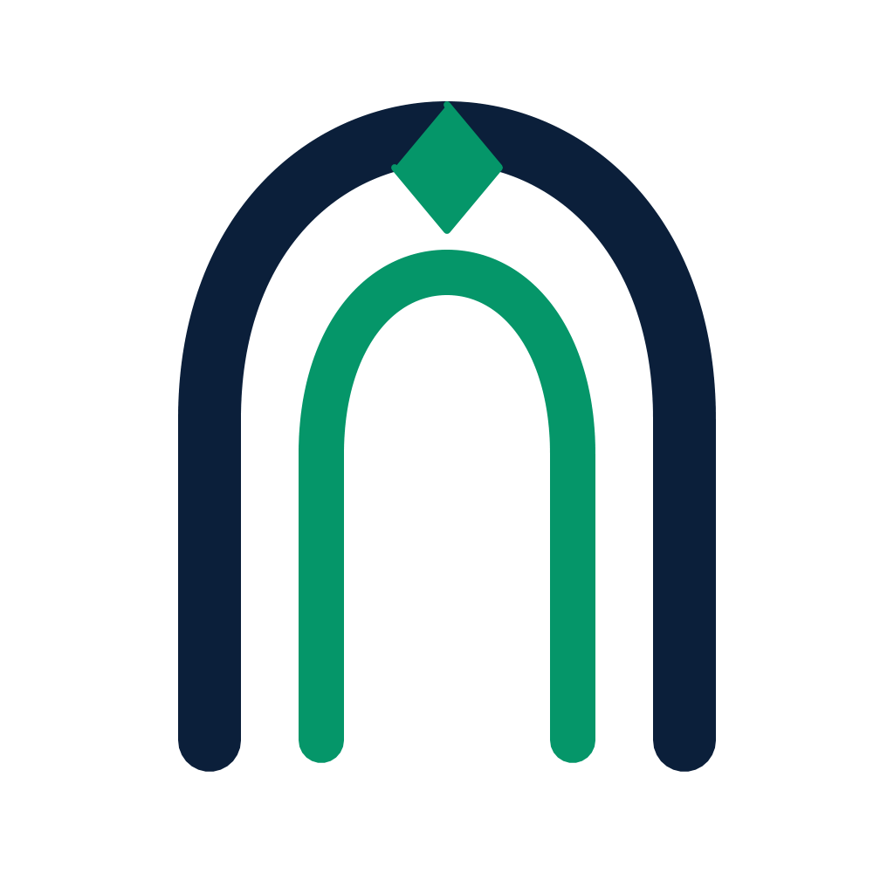
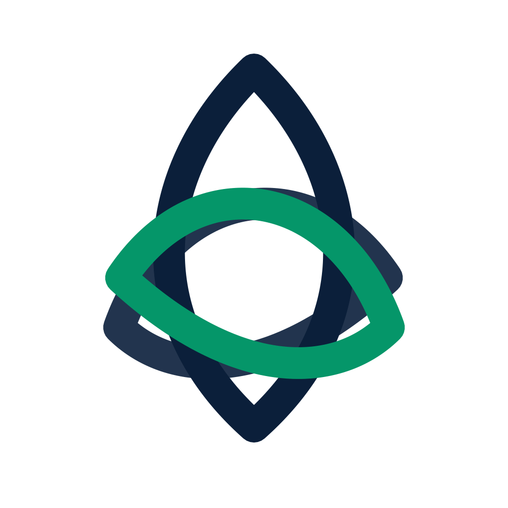
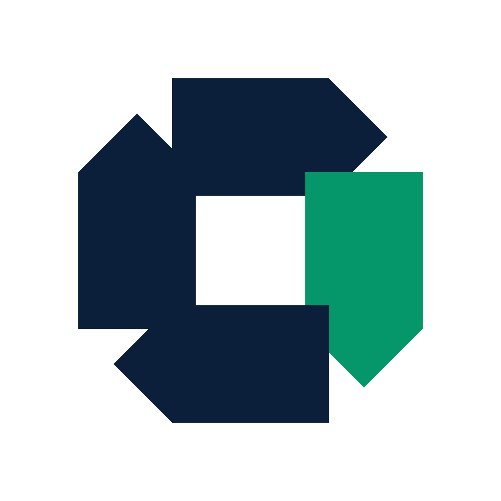

Menerapkan prinsip agensi desain legendaris dunia (Chermayeff & Geismar & Haviv dan Pentagram): Mengganti klise perisai & centang generik dengan simbol geometris abstrak murni (*Identification over Cliché*).
Studi terhadap brand-brand paling berpengaruh di dunia (Apple, Nike, Ethereum, Chase Bank, OpenZeppelin) membuktikan bahwa logo berkelas dunia tidak pernah menggambarkan fungsinya secara harfiah (klise ilustratif). Bank tidak menggambar brankas uang, dokter gigi tidak menggambar gigi, dan auditor keamanan smart contract berkelas dunia tidak menggambar kartun perisai dan centang checklist antivirus. Logo legendaris adalah gestur visual tunggal yang berakar pada matematika, integritas garis, dan gestalt psikologi.
Gerbang Suaka Terbuka & Permata Kriptografi

Terinspirasi oleh monumen gerbang arsitektur dan prinsip National Geographic. Menggabungkan dua pilar simetris yang melengkung membentuk gerbang perlindungan yang terbuka lebar.
Simpul Tiga Pilar Keamanan & Lensa Kebenaran

Terinspirasi oleh simpul topologis OpenZeppelin dan International Woolmark. Tiga kurva dinamis yang saling mengunci membentuk lensa penglihatan audit (the auditor's eye).
Oktagon Kriptografi Presisi Chermayeff & Geismar

Terinspirasi oleh mahakarya Chase Bank (1961) dan logika desentralisasi Ethereum. 4 modul geometris terotasi yang membentuk brankas abstrak dengan jendela transparansi sentral.